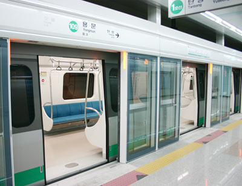
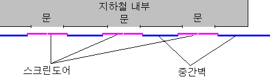
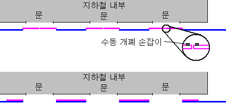
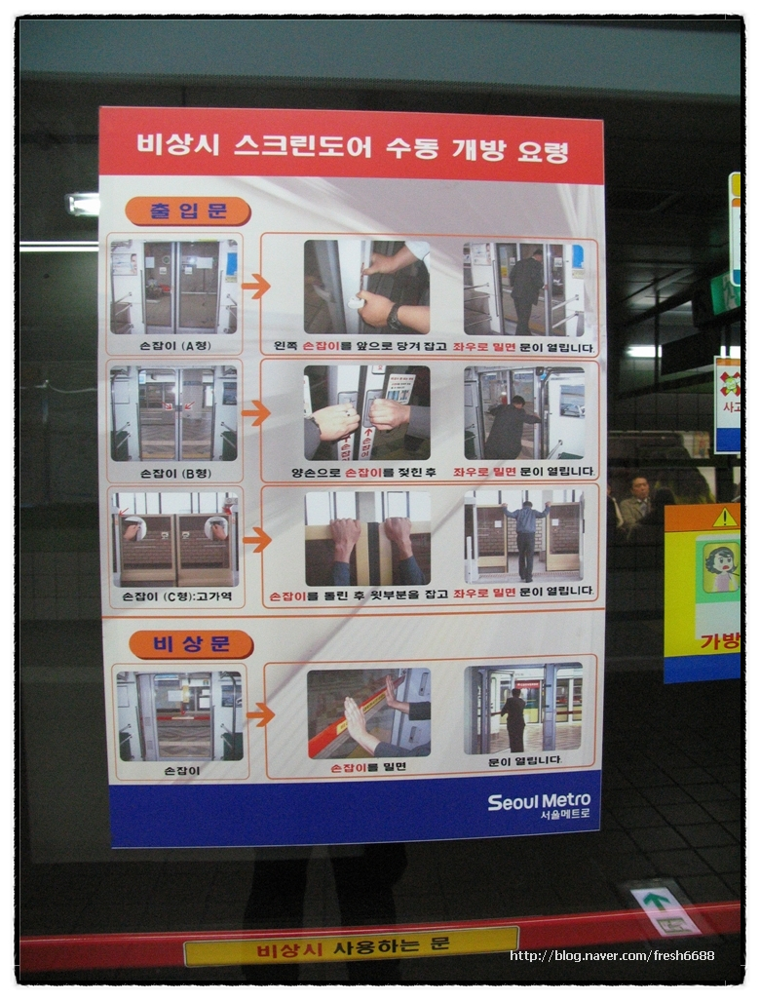

[지하철 안전 지킴이. 스크린도어]
서울시의 스크린도어 사업이 가속화 되고 있다.
이미 주요 환승역과 통행이 많은 역에는 스크린도어가 설치되어있거나 설치중이다.
스크린도어의 기능이나 구조는 생략하고 간과되고 있는 위험성에 대해 알아보자.
현재 스크린도어는 지하철의 비상사태에 대비해 2가지 탈출경로(?)를 제공하고 있다.
첫째는 스크린도어 자체의 수동 열기 기능이다. 스크린도어가 열리지 않을 경우 도어에 설치된 비상 개폐 손잡이를 이용해
수동으로 스크린도어를 개방할 수 있도록 설계되어 있다.
둘째는 도어 사이의 밀고나오는 문(비상도어)이다. 스크린도어와 도어 사이의 중간벽에는 안쪽에서 밀고나올 수 있도록 비상도어가 설치되어있다.
얼핏 보기에는 문으로도. 문이 아닌 곳으로도 탈출할 수 있어서 안전하게 설계된 것처럼 보인다.
과연 어떻게 문제가 발생하는가?
잠시 어설픈 그림을 보자.

[그림1. 스크린도어의 배치]
스크린도어는 그림과 같이 문과 나란히 배치되며 폭이 다소 넓다. 위의 첫 사진을 보는게 더 좋을듯 하다.
비상시 발생 가능한 조건을 아래와 같이 구분해보았다.
1. 문과 스크린도어의 위치가 일치하는가? 일치하지 않는가?
2. 스크린도어가 열려있는가? 닫혀있는가?
이렇게 2가지 조건에 의해 총 4가지 상황이 발생한다.
1. 문과 스크린도어가 일치하며 스크린도어가 열려있는 경우.
2. 문과 스크린도어가 일치하며 스크린도어가 닫혀있는 경우.
3. 문과 스크린도어가 일치하지 않으며 스크린도어가 닫혀있는 경우.
4. 문과 스크린도어가 일치하지 않으며 스크린도어가 열려있는 경우.
(설명 편의상 3, 4 항목의 배치가 뒤바뀌어 있다.)
각 항목별로 상황을 자세히 살펴보자.
1. 문과 스크린도어가 일치하며 스크린도어가 열려있는 경우.
아무 문제가 없다.
지하철 문은 자동/수동으로 개폐 가능하므로 지하철 문을 열고 이미 열려있는 스크린도어로 탈출하면 된다.
2. 문과 스크린도어가 일치하며 스크린도어가 닫혀있는 경우.
역시 문제가 없다.
스크린도어의 수동 개폐 손잡이를 이용해 스크린도어를 열고 탈출하면 된다.

[그림2. 문과 스크린도어가 일치하는 경우]
3. 문과 스크린도어가 일치하지 않으며 스크린도어가 닫혀있는 경우.
문제 없다.
중간벽 비상도어의 레버를 밀고 나오면 된다.
4. 문과 스크린도어가 일치하지 않으며 스크린도어가 열려있는 경우.
여기서 문제 발생!!
스크린도어와 중간벽이 문을 정면으로 가로막게 된다.
[그림2] 에서 볼 수 있듯이 스크린도어의 수동 개폐 손잡이는 비상시 스크린도어를 열 수 있는 위치에 있다.
따라서 지하철 화재등 비상시에 스크린도어가 자동으로 완전 개방된 상태에서는 이 스크린도어를 수동으로
닫을 방법이 없다. (수동 개폐 손잡이가 문 바깥쪽에도 필요하다는 간단한 해결책이 나올 것 같다.)
이렇다면 미닫이 스크린도어와 여닫이 중간벽을 앞에두고 지하철내의 승객은 갇히게 된다.
--
이게 끝이다.
실제로 발생 가능한 상황인지는 직접 실험을 해보기 전에는 알 수가 없으나
적어도 지하철 내의 스크린도어 설명서에서는 이런 상황의 탈출방법에 대해서는 언급되어있지 않았다.
스크린도어를 수동으로 닫는법.
과연 존재할까?
-------------------------------------------------
이하는 지하철 정보카페에 공개되어 있는 비상시 스크린도어 사용법에서 발췌한 내용입니다.
여기에도 '문을 여는 방법' 에 대해서만 설명하고 있을 뿐. 열린 채로 멈춰버린 문을 닫는 방법에 대해서는 언급되지 않고 있습니다.
-------------------------------------------------
* 전기적인 조작이 불가한 경우 조작방법
첫째, 열차의 문은 열렸는데 스크린도어가 열리지 않을 때는 승객이 직접 선로 측에 설치된 슬라이딩도어 수동해제 핸들로 레버를 작동시켜 쉽게 열 수 있습니다.
둘째, 열차가 정위치를 벗어나 정차 했을 경우는 슬라이딩 도어 옆에 설치된 비상도어의 손잡이를 누르면서 밀면 문을 열어 대피할 수 있습니다.
셋째, 터널 내에서 화재 및 열차 장애로 인한 대피는 역사 승강장 양쪽 출입문을 통해 대피가 가능하도록 수동으로 열수 있습니다.
첫째, 열차의 문은 열렸는데 스크린도어가 열리지 않을 때는 승객이 직접 선로 측에 설치된 슬라이딩도어 수동해제 핸들로 레버를 작동시켜 쉽게 열 수 있습니다.
둘째, 열차가 정위치를 벗어나 정차 했을 경우는 슬라이딩 도어 옆에 설치된 비상도어의 손잡이를 누르면서 밀면 문을 열어 대피할 수 있습니다.
셋째, 터널 내에서 화재 및 열차 장애로 인한 대피는 역사 승강장 양쪽 출입문을 통해 대피가 가능하도록 수동으로 열수 있습니다.
출처: http://cafe.naver.com/dlr (회원 공개 게시물이라 카페만 링크합니다)

[비상시 스크린도어 수동 개방 요령. 제목에서 보다시피 '개방' 에만 초점을 두고 있다.]